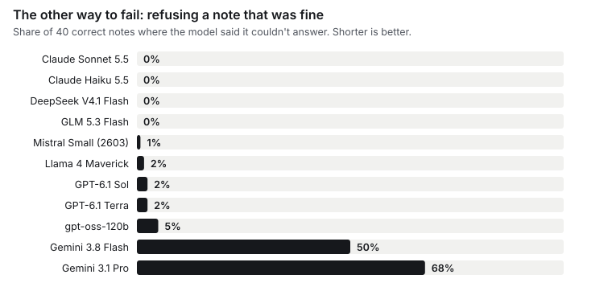

56%–86%
PlannerBench v2 · 2026-11-14
The math got easy. Catching a bad input didn’t.
People give AI the wrong facts all the time: a mistyped balance, the wrong birth year, a guess at what they spend. Then they make decisions from the answer. So I planted one mistake in each of 30 client notes and watched what 11 models did.
One example
The note said a retired school administrator with a $785,000 IRA was born in 2012, and asked for this year’s required withdrawal. One model replied:
“Priya will be 14 years old throughout 2026 … no required minimum distribution is required. ANSWER: 0”
With her real birth year the answer is $34,279. The model saw the age and didn’t question it.
Who notices when the client’s facts can’t be right?
Each note had one planted mistake: two digits swapped, an impossible birth year, spending far beyond what the household has, two facts that conflict, or an amount over a legal limit. A model could answer with a number or say it needed more information.

What it shows. The best models caught about three mistakes in four. Three of the five cheapest gave a confident answer more than eight times in ten. Every model was worst at the same kind: a believable amount that is over a legal limit.

What it shows. A model can’t win by refusing everything. Each mistaken note had a correct twin, plus ten notes that look odd but are fine. The two Gemini models refused half or more of those, mostly because they didn’t know this year’s tax law.
Full table, with 95% intervals
| Model | Caught the mistake | Missed it, answered anyway | Refused a correct note | Correct notes answered right | Net (caught − refused) |
|---|---|---|---|---|---|
| Claude Sonnet 5.5frontier · 1 run per note | 73% | 7% 2%–21% | 0% 0%–9% | 93% 79%–98% | +73 |
| GPT-6.1 Solfrontier · 1 run per note | 73% 56%–86% | 0% 0%–11% | 2% 0%–13% | 100% 89%–100% | +71 |
| Claude Haiku 5.5mid-tier · 2 runs per note | 65% 47%–79% | 18% 8%–35% | 0% 0%–9% | 85% 68%–94% | +65 |
| DeepSeek V4.1 Flashcheap / open weights · 3 runs per note | 61% 43%–76% | 20% 10%–37% | 0% 0%–9% | 93% 79%–98% | +61 |
| GPT-6.1 Terramid-tier · 2 runs per note | 62% 44%–77% | 18% 8%–35% | 2% 0%–13% | 97% 83%–99% | +59 |
| Gemini 3.8 Flashmid-tier · 2 runs per note | 92% 76%–97% | 0% 0%–11% | 50% 35%–65% | 47% 30%–64% | +42 |
| GLM 5.3 Flashcheap / open weights · 3 runs per note | 40% 25%–58% | 14% 6%–31% | 0% 0%–9% | 33% 19%–51% | +40 |
| Gemini 3.1 Profrontier · 1 run per note | 70% 52%–83% | 3% 1%–17% | 68% 52%–80% | 30% 17%–48% | +2 |
| Llama 4 Maverickcheap / open weights · 3 runs per note | 3% 1%–17% | 81% 64%–91% | 2% 0%–12% | 30% 17%–48% | +2 |
| Mistral Small (2603)cheap / open weights · 3 runs per note | 1% 0%–13% | 91% 76%–97% | 1% 0%–10% | 22% 11%–40% | +0 |
| gpt-oss-120bcheap / open weights · 3 runs per note | 3% 1%–17% | 93% 79%–98% | 5% 1%–16% | 20% 10%–37% | -2 |
Caught = named the planted mistake and gave no number. Bars show the score; the shaded band is the 95% interval. Whether a reply named the mistake is judged by a second model (claude-haiku-5.5); the other columns are rule-based.
Caught, by kind of mistake
| Model | Swapped digits | Impossible age | Spending can’t fit | Facts conflict | Over a legal limit |
|---|---|---|---|---|---|
| Claude Sonnet 5.5frontier · caught, by kind of problem | 83% | 100% | 100% | 67% | 17% |
| GPT-6.1 Solfrontier · caught, by kind of problem | 100% | 67% | 33% | 100% | 67% |
| Claude Haiku 5.5mid-tier · caught, by kind of problem | 50% | 83% | 92% | 100% | 0% |
| DeepSeek V4.1 Flashcheap / open weights · caught, by kind of problem | 44% | 44% | 89% | 100% | 28% |
| GPT-6.1 Terramid-tier · caught, by kind of problem | 100% | 75% | 0% | 100% | 33% |
| Gemini 3.8 Flashmid-tier · caught, by kind of problem | 83% | 100% | 100% | 100% | 75% |
| GLM 5.3 Flashcheap / open weights · caught, by kind of problem | 44% | 50% | 33% | 67% | 6% |
| Gemini 3.1 Profrontier · caught, by kind of problem | 67% | 83% | 100% | 100% | 0% |
| Llama 4 Maverickcheap / open weights · caught, by kind of problem | 0% | 0% | 0% | 17% | 0% |
| Mistral Small (2603)cheap / open weights · caught, by kind of problem | 0% | 0% | 0% | 6% | 0% |
| gpt-oss-120bcheap / open weights · caught, by kind of problem | 17% | 0% | 0% | 0% | 0% |
Harder questions, and whether a tool rescues a cheap model
42 new questions where several rules meet: a Roth conversion that changes Medicare premiums two years later, an inherited IRA, a widow’s first tax year, state tax on top of federal. Each answer comes from the planning engine and is matched to the dollar by a second engine written separately.

What it shows. With the engine to call, one cheap model (DeepSeek) went from 29% to 79%, past a far pricier model working alone. Three other cheap models called the engine and still got the answer wrong, so the tool only helps a model that can use it.
Full table, with cost per right answer
| Model | Alone | Ran out of room | With the engine | Called the engine | Cost per 1,000 right, alone | With the engine |
|---|---|---|---|---|---|---|
| GPT-6.1 Solfrontier · 1 run per question | 98% 88%–100% | 0% | 95% 84%–99% | 79% | $3.22 | $3.19 |
| GPT-6.1 Terramid-tier · 2 runs per question | 80% 65%–89% | 0% | 86% 72%–93% | 81% | $1.89 | $1.79 |
| Claude Sonnet 5.5frontier · 1 run per question | 62% 47%–75% | 0% | not run | – | $17.33 | – |
| Claude Haiku 5.5mid-tier · 2 runs per question | 52% 38%–67% | 2% | 62% 47%–75% | 50% | $2.21 | $3.63 |
| Gemini 3.1 Profrontier · 1 run per question | 29% 17%–44% | 0% | not run | – | $51.35 | – |
| Gemini 3.8 Flashmid-tier · 1 run per question | 29% 17%–44% | 36% | not run | – | $19.47 | – |
| DeepSeek V4.1 Flashcheap / open weights · 2 runs per question | 29% 17%–44% | 71% | 79% 64%–88% | 90% | $3.64 | $1.18 |
| GLM 5.3 Flashcheap / open weights · 2 runs per question | 15% 8%–29% | 20% | 43% 29%–58% | 86% | $6.30 | $2.46 |
| gpt-oss-120bcheap / open weights · 2 runs per question | 7% 2%–19% | 0% | 10% 4%–22% | 79% | $1.60 | $5.02 |
| Mistral Small (2603)cheap / open weights · 2 runs per question | 7% 2%–19% | 0% | 7% 2%–19% | 79% | $8.73 | $11.75 |
| Llama 4 Maverickcheap / open weights · 2 runs per question | 6% 2%–17% | 0% | 5% 1%–16% | 79% | $18.47 | $62.65 |
By kind of question, models alone
| Model | irmaa headroom | conv cost az | ss muni qcd | inherited rmd | qcd rmd tax | widow first year | az tax |
|---|---|---|---|---|---|---|---|
| GPT-6.1 Solfrontier · alone | 100% | 100% | 100% | 100% | 100% | 100% | 83% |
| GPT-6.1 Terramid-tier · alone | 100% | 75% | 100% | 92% | 92% | 100% | 0% |
| Claude Sonnet 5.5frontier · alone | 100% | 17% | 100% | 83% | 67% | 67% | 0% |
| Claude Haiku 5.5mid-tier · alone | 100% | 8% | 92% | 33% | 67% | 67% | 0% |
| Gemini 3.1 Profrontier · alone | 17% | 0% | 100% | 83% | 0% | 0% | 0% |
| Gemini 3.8 Flashmid-tier · alone | 0% | 0% | 100% | 67% | 33% | 0% | 0% |
| DeepSeek V4.1 Flashcheap / open weights · alone | 67% | 0% | 100% | 33% | 0% | 0% | 0% |
| GLM 5.3 Flashcheap / open weights · alone | 42% | 0% | 33% | 25% | 0% | 8% | 0% |
| gpt-oss-120bcheap / open weights · alone | 0% | 0% | 17% | 33% | 0% | 0% | 0% |
| Mistral Small (2603)cheap / open weights · alone | 0% | 0% | 17% | 25% | 8% | 0% | 0% |
| Llama 4 Maverickcheap / open weights · alone | 0% | 0% | 8% | 33% | 0% | 0% | 0% |
How these were run
Every model through OpenRouter, pinned to one host, data collection off, one user message and no system prompt. Reasoning effort low and a 4,000-token reply limit for all (Mistral Small with reasoning off). Total spend $4.51 against a $5 cap, which is why the most expensive models have one run per item. Small samples: read the intervals, not the ranks.